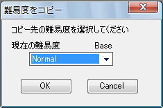
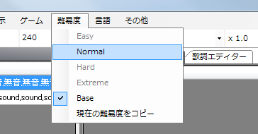

何も言っていませんでしたが、今まで制作していた難易度は４つの難易度(easy,normal,hard,extreme)のどれにも当てはまらない難易度Baseです。
Baseはその名のとおり、ベースになる部分を制作するための難易度です。ここから他の難易度にコピーしてマークの種類を変えたりして難易度を増やす方法を開発者は想定してします。
また、Baseのままではプレイ不可能ですのでとりあえず何かの難易度にコピーする必要があります。
Base難易度をNormal難易度にコピーしてみましょう。
難易度→現在の難易度をコピーを選択します。

さらに、表示されたダイアログのコンボボックスをNormalにしてOKを押します。

この状態ではコピーされただけなので、Normalの難易度で譜面を修正するために難易度を切り替えます。

現在の難易度は難易度メニューをクリックするか、PPDEditorのメインウィンドウが譜面名(Normal) - PPDEditorのようになっているので判断することができます。
アンドゥなどのヒストリー情報は難易度を切り替えると消えてしまうので注意してください。
次へ